Have a USB or portable SSD available to install installation media, preferably USB 3.0 and has at least 16 GB of storage
Something to back up your storage, like something via cloud like Google Drive as you will be wiping your entire drive
Linux is an open source operating system that is a replacement to Windows. It is best for gaming laptops and older hardware as they can significantly improve performance. In this guide, we will be installing Linux Mint, a beginner linux distro that looks very good and supports the latest drivers.
For example, a computer with a 6 core Intel Core i5-10400 @ 2.90Ghz CPU that ran originally 90% with just Windows 11 by itself now only runs 10% with Linux Mint!
Firstly, you need to grab the ISO file from the Linux Mint website, which is basically a file that contains everything that should be written onto something like a USB, which we will be doing. You can go ahead and go to the Linux Mint website and hit the Download button to get to the download page.
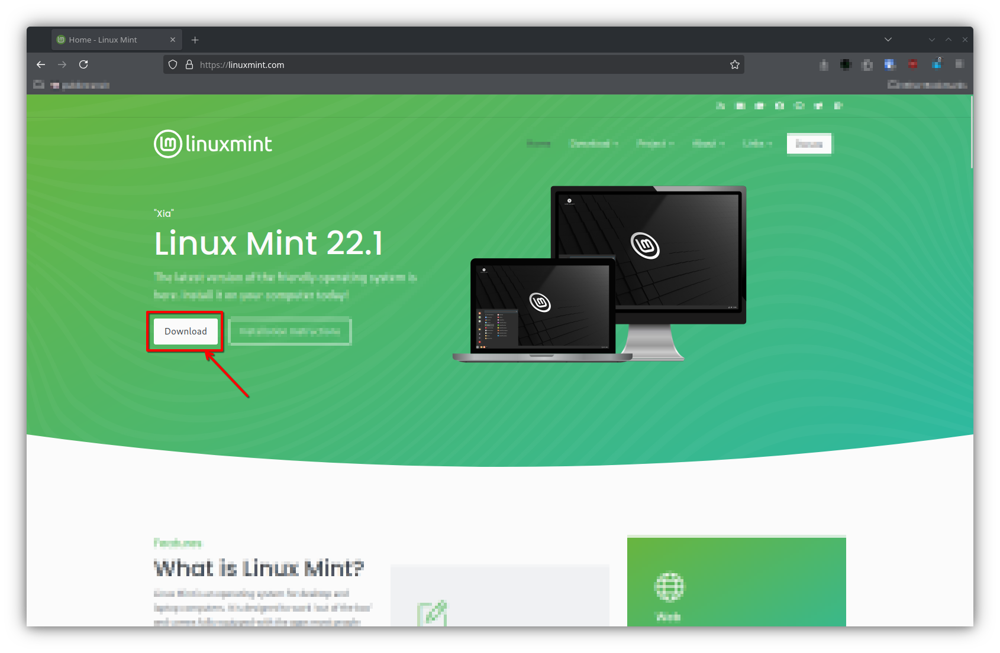There should be three different versions, Cinnamon Edition, Xfce Edition, and MATE Edition. This just changes your desktop environment, which is your graphical interface. Consider it basically your desktop! I would recommend the Cinnamon Edition but if you have issues with it I would use the Xfce Edition as it is a bit more lightweight. Once you choose your environment, click on the black download button. For this tutorial, I'll be using the Cinnamon Edition.
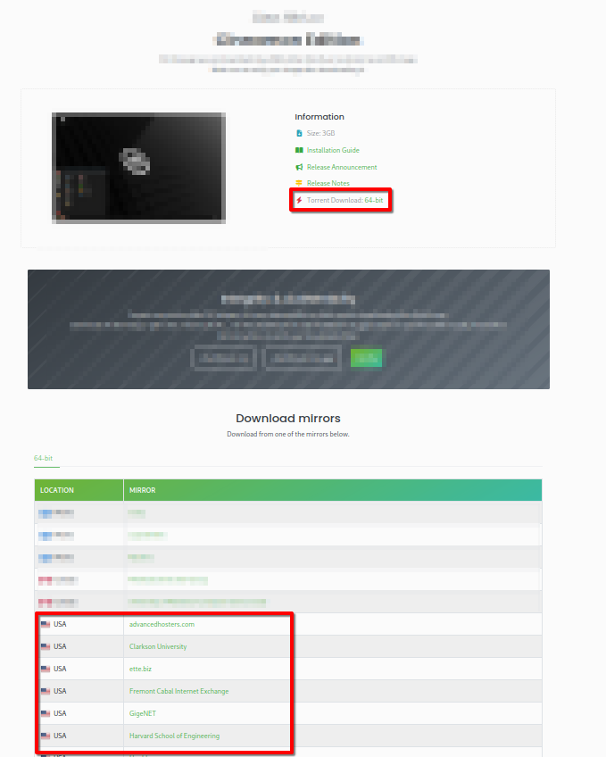If you have a torrent you can use the "Torrent Download: 64-bit" and its a bit faster than the mirror download. If you want to download over HTTPS, you can just use the "Download mirrors" section, find your country and select a mirror to download. I would recommend the university ones as I find them to be the most reliable. The ISO file is usually 2GB, so let it download for about 5-20 minutes depending on your internet speeds.
Now that you successfully installed the ISO file onto your computer, you can now put it on your removable drive. To do so, you need a program called Balena Etcher, go ahead and install the program by clicking the "Download Etcher" button on their website and download the Windows version. Aftwards, this GUI should show up.
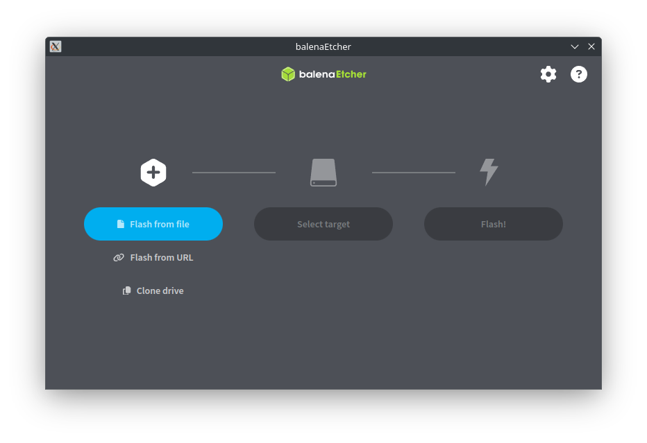Firstly, click on "Flash from file" and select the Linux Mint iso. Secondly, you want to select the target that you are going to install the installation medium on. Be sure to select the right drive because this will wipe ALL DATA on the removable drive! Finally, you can go ahead and click on the "Flash!" button. It will ask for administrator permissions, go ahead and give it such.
Once it is finished, you can go ahead and restart your computer. Be sure to back up any important files beforehand as this will wipe your drive.
This guide differs depending on what motherboard you use. Refer to your motherboard's manual of how to turn off secure boot and enter the BIOS Setup. In this guide, I will be using my motherboard, ASRock, as an example.
This is required for installing Linux because it is open-source, and doesn't have keys like Microsoft to be "secure". Don't worry, nothing bad happens when you turn off secure boot.
To find your BIOS Setup key, you can usually search it up on Google or any other search engine...
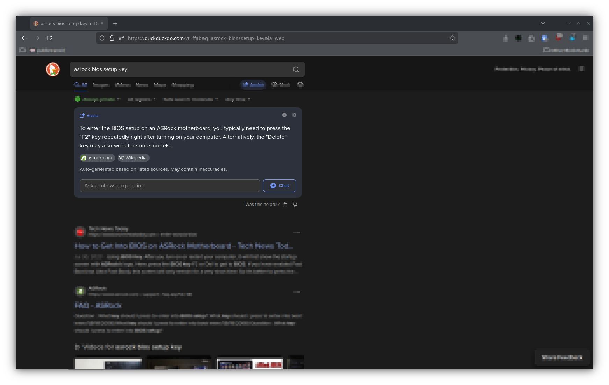My motherboard uses the DEL key for BIOS Setup, so go ahead and restart your computer/laptop and spam the BIOS Setup key. You should pop up with a bunch of settings you can change, for example with my motherboard it looks like this... This isn't my original image, rather this comes from PCMag
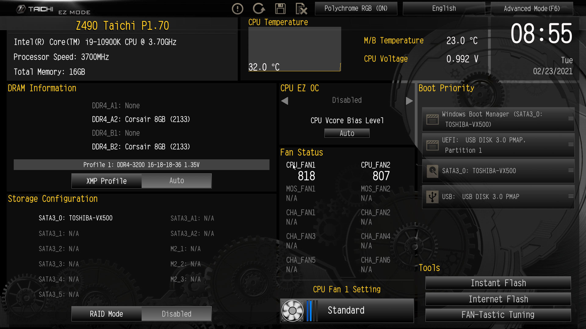Usually your BIOS will start in "EZ Mode" which is good for simple changes, like changing your time, but we want to turn off secure boot, which is in Advanced Mode. To go to advanced mode, there usually is a button to let you in. For example, in the above image there's a button that says "Advanced Mode (F6)" which you would click on.
On my motherboard, the secure boot toggle is in the "Security" tab though it may be different for you. Most likely, it is best to Google or look at your motherboard manual to see where the secure boot toggle is. At this point, just click on or press ENTER on the toggle and select Disabled! This isn't my original image, rather this comes from the official ASRock documentation.
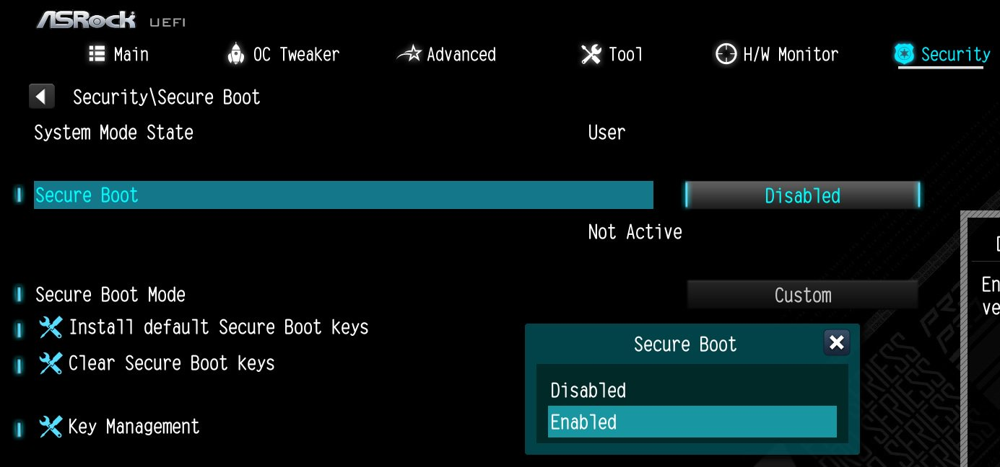Alright, the last step is to make the installation medium the highest priority so you can boot into Linux Mint. Go to the "Boot" tab, or whatever it is for you and make the "UEFI: (usb name)" or "USB/Hard Disk" or (generally you want to use the UEFI one but if you don't have it use this one) "USB: (usb name)" Boot Option #1 or the highest on the list. This isn't my original image, rather this comes from ecos.de
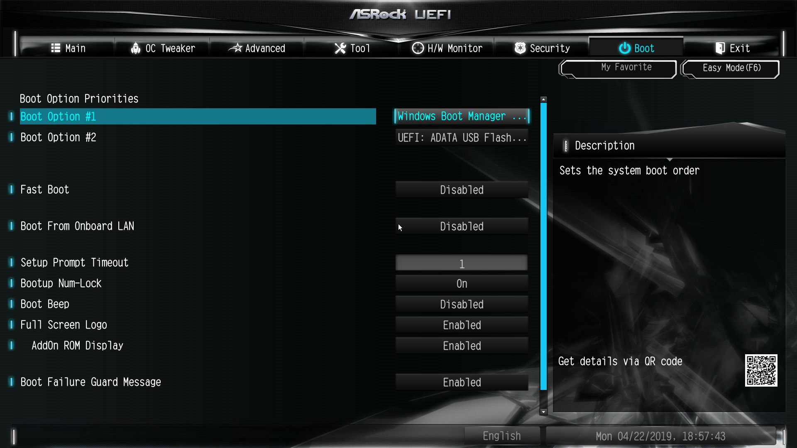When you are finally done, you can go to the "Exit" tab or whatever it is for you, and save and exit your changes. It will now boot from your installation medium.
Usually most modern computers use the UEFI boot instead of the original legacy boot, so most likely you will see this when your computer boots.
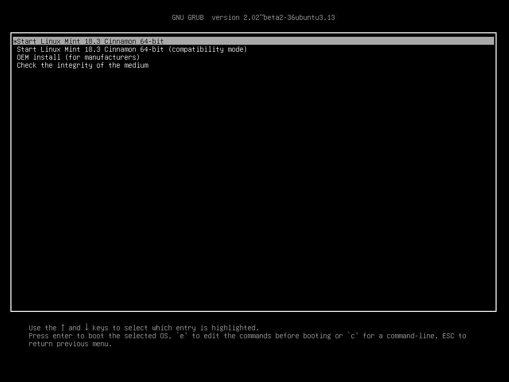Press ENTER on "Start Linux Mint X.XX Cinnamon 64-bit" or whatever edition you chose. After a few seconds, the Linux Mint logo should pop up in the middle of your screen! If you see this, then there will be smooth sailing up ahead.
After a bit (~30-60 seconds), your cursor will pop up and then the desktop environment.
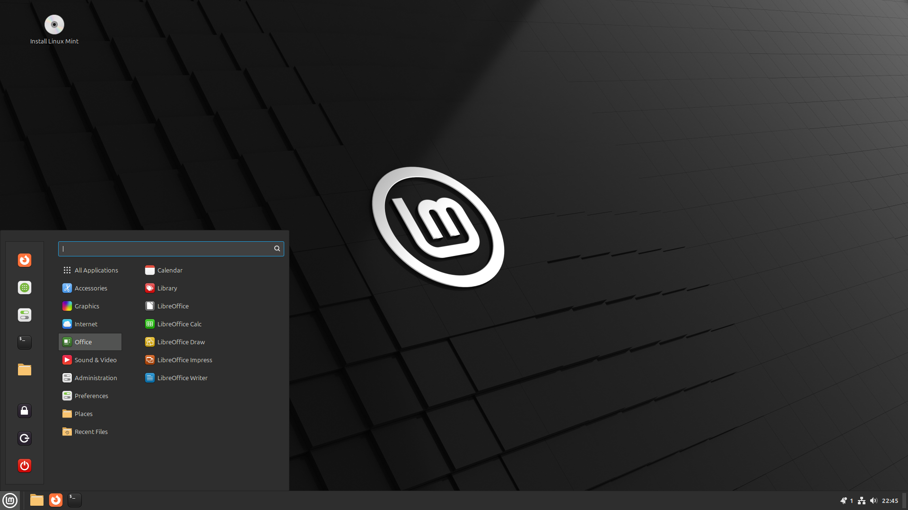Move your cursor over to "Install Linux Mint" and double click on it. Go through the installation process. If you disabled secure boot correctly, it shouldn't ask you to put the secure boot password. During the installation, you will find a page like this:
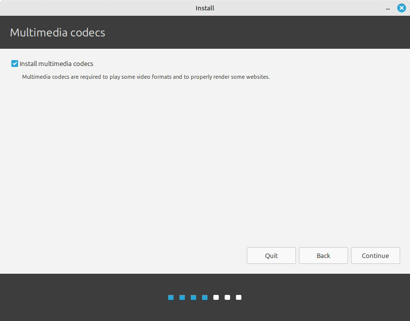You will want to tick this on. Without this, most videos or audios on websites or on your computer will not play.
Anywho, after installation is completed it will ask you to restart. Click on "Restart Now" and then it should ask you to take out the installation medium. If it does ask, take it out and then press ENTER. If it doesn't say and reboots, turn off your computer, take out the installation medium, and then turn the computer back on.
If you booted into Linux Mint with no problems, congrats! You successfully installed Linux Mint. 🎉
When you first boot into Linux Mint, you should be greeted with the Welcome Screen.
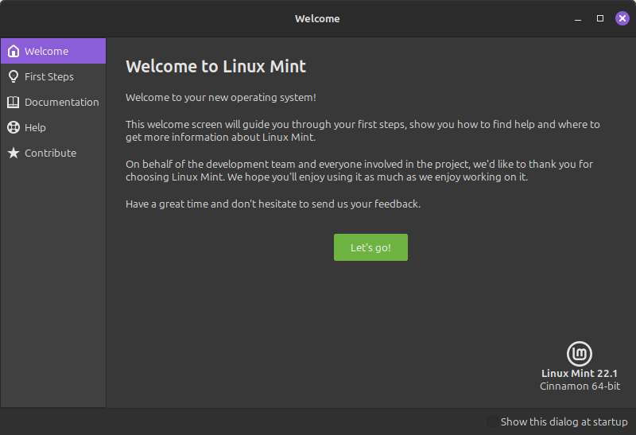You can continue by clicking on the "Let's go!" button and then it will show programs that can be configured to your heart's content. You can also find documentation and help documents if you get stuck while using Linux Mint. You can go look at all the programs by yourself, but I'm gonna look over the Driver Manager for NVIDIA GPUs.
Oh yeah, don't forget to turn off "Show this dialog at startup" if you are done using the Welcome Screen and updating.
You can skip this section if you have an AMD GPU because Linux already has the latest drivers for AMD, thanks to AMD's cool open source superiority.
Linux Mint comes with NVIDIA drivers 550.X.X, which is outdated at this point. By default, they use the open source driver, nouveau, which works.. decently. To get the latest drivers, by the time of writing 570.X.X, you just need to add the NVIDIA PPA repository, which basically is a folder full of packages for your use.
To add this repository, press the super key (Windows key) and type or find the program "Software Sources". It will ask for your password, type it in and press "Authenticate" or press ENTER. On the left side of the window, there should be a tab called "PPAs", click on that. Afterwards, click the "Add" button at the bottom of the window and type the following link:
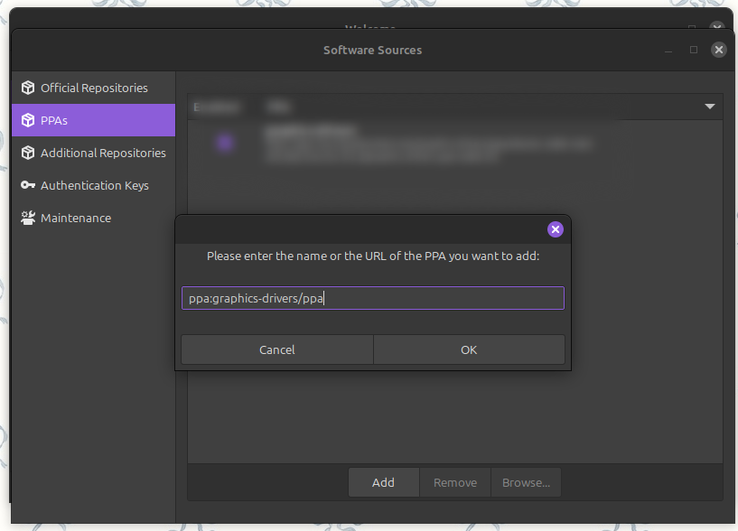Once pressing "OK", it should ask for confirmation. Press "Confirm" and you should see a green button appear talking about updating APT repos. You want to click on that and let it do its thing. Once it is done, you can close out of Software Sources and open back up Driver Manager. The latest NVIDIA drivers should be there!
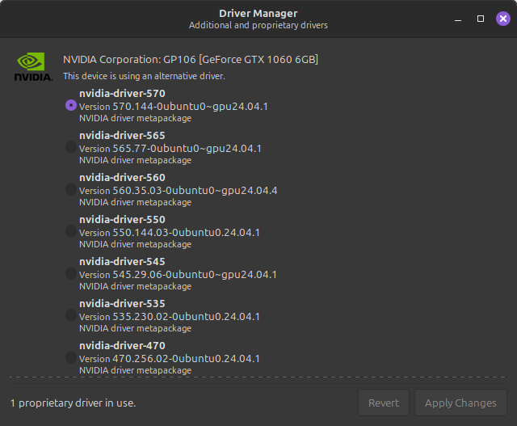